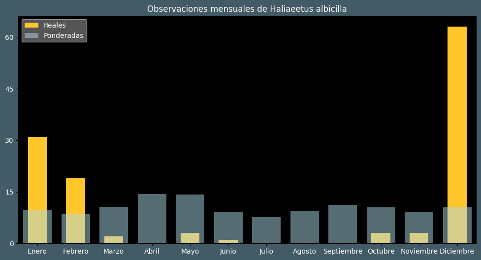

Observaciones por mes
Observations por hora

Categoría IUCN: ?
Género: Haliaeetus
Familia: Accipitridae
Orden: Accipitriformes
Descubrimiento: Linnaeus (1758)
| Idioma | Nombre |
|---|---|
| Afrikaans (af) | ? |
| Arabic (ar) | عقاب البحر بيضاء الذيل |
| Belarusian (be) | Арлан-белахвост |
| Bulgarian (bg) | Морски орел |
| Catalan (ca) | Pigarg cuablanc |
| Chinese (zh) | 白尾海雕 |
| Chinese traditional (zh-TW) | 白尾海鵰 |
| Croatian (hr) | Štekavac |
| Czech (cs) | Orel mořský |
| Danish (da) | Havørn |
| Dutch (nl) | Zeearend |
| English (en) | White-tailed eagle |
| Estonian (et) | Merikotkas |
| Finnish (fi) | Merikotka |
| French (fr) | Pygargue à queue blanche |
| German (de) | Seeadler |
| Greek (el) | (ευρωπαϊκός) θαλασσαετός |
| Hebrew (he) | עיטם לבן-זנב |
| Hungarian (hu) | Rétisas |
| Icelandic (is) | Haförn |
| Indonesian (id) | ? |
| Italian (it) | Aquila di mare |
| Japanese (ja) | オジロワシ |
| Korean (ko) | 흰꼬리수리 |
| Latvian (lv) | Jūras ērglis |
| Lithuanian (lt) | Paprastasis jūrinis erelis |
| Maceodnian (mk) | Белоопашест орел |
| Malayalam (ml) | വെള്ളവാലൻ കടൽപ്പരുന്ത് |
| North_sami (se) | Mearragoaskin |
| Norwegian (no) | Havørn |
| Persian (fa) | عقاب دریایی دم سفید |
| Polish (pl) | Bielik (zwyczajny) |
| Portuguese (pt) | Pigargo-eurasiático |
| Russian (ru) | Орлан-белохвост |
| Serbian (sr) | Belorepan |
| Slovak (sk) | Orliak morský |
| Spanish (es) | Pigargo europeo |
| Swedish (sv) | Havsörn |
| Thai (th) | นกอินทรีหางขาว |
| Turkish (tr) | Ak kuyruklu kartal |
| Ukrainian (uk) | Орлан-білохвіст |